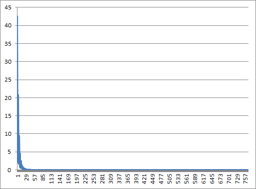
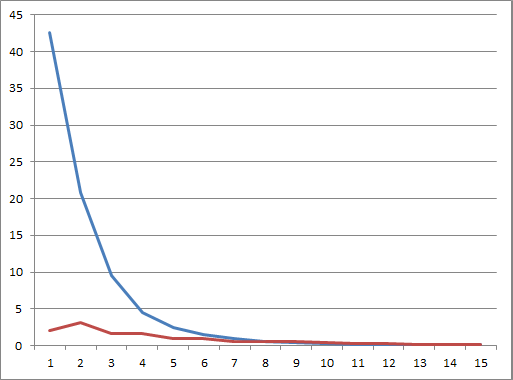
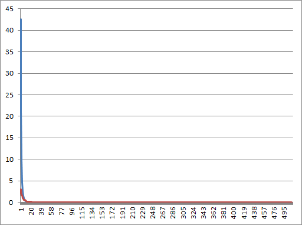

Suppose you have two photographs of a patch of the night sky:
and you want to know how different they are. The simplest way would be to see if any of the pixels' values differ, but that's pretty much guaranteed to return a "yes". A better measure is to see how many pixels differ by more than some threshold, but that raises two questions:
To answer the first question, most images encode the red, green, and blue values of pixels separately, so we can add up the absolute values of the differences between those color values:
d1 = abs(R — r) + abs(G — g) + abs(B — b)
We could equally well add the color values for each pixel to get a total, then look at the differences between those:
d2 = abs((R + G + B) — (r + g + b))
Does it matter which we choose? And either way, how big a difference should count as different? Since we're scientists, we can answer these questions experimentally. Here's a Python program that reads in an image, scales it down to half its original size, scales it back up, then calculates both difference measures. Its output is a histogram of how many pixels differ by how much according to the two measures, and how different the measures are from each other:
import sys
from PIL import Image
# Load the original image.
original = Image.open(sys.argv[1])
width, height = original.size
original_data = original.load()
# Create a duplicate by enlarging then shrinking the original.
duplicate = original.resize((width/2, height/2)).resize((width, height))
duplicate_data = duplicate.load()
# Count how many pixels differ by how much using two measures:
# | (R+G+B) - (r+g+b) |
# | R-r | + | G-g | + | B-b |
overall = [0] * (3 * 255 + 1)
individual = [0] * (3 * 255 + 1)
for x in xrange(width):
for y in xrange(height):
o_r, o_g, o_b = original_data[x, y]
d_r, d_g, d_b = duplicate_data[x, y]
diff_o = abs((o_r + o_g + o_b) - (d_r + d_g + d_b))
overall[diff_o] += 1
diff_i = abs(o_r - d_r) + abs(o_g - d_g) + abs(o_b - d_b)
individual[diff_i] += 1
# Display histogram.
num = width * height
print '%10s %10s %10s %10s %10s %10s' % \
('diff', 'overall', '%age', 'individual', '%age', 'difference')
for i in range(len(overall)):
pct_o = 100.0 * float(overall[i]) / num
pct_i = 100.0 * float(individual[i]) / num
diff = abs(overall[i] - individual[i])
pct_d = 100.0 * float(diff) / num
print '%10d %10d %10.1f %10d %10.1f %10.1f' % \
(i, overall[i], pct_o, individual[i], pct_i, pct_d)
Its output looks like this:
| diff | overall | (%) | individual | (%) | difference |
| 0 | 130716 | 42.6 | 128472 | 41.8 | 0.7 |
| 1 | 6574 | 2.1 | 1746 | 0.6 | 1.6 |
| 2 | 9432 | 3.1 | 8430 | 2.7 | 0.3 |
| 3 | 63792 | 20.8 | 66992 | 21.8 | 1.0 |
| 4 | 4887 | 1.6 | 7037 | 2.3 | 0.7 |
| 5 | 4880 | 1.6 | 5692 | 1.9 | 0.3 |
| 6 | 29115 | 9.5 | 29622 | 9.6 | 0.2 |
| 7 | 3131 | 1.0 | 3485 | 1.1 | 0.1 |
| 8 | 2888 | 0.9 | 3175 | 1.0 | 0.1 |
| 9 | 13714 | 4.5 | 13907 | 4.5 | 0.1 |
| 10 | 1981 | 0.6 | 2097 | 0.7 | 0.0 |
| 11 | 1849 | 0.6 | 1955 | 0.6 | 0.0 |
| 12 | 7597 | 2.5 | 7665 | 2.5 | 0.0 |
| 13 | 1432 | 0.5 | 1467 | 0.5 | 0.0 |
| 14 | 1311 | 0.4 | 1341 | 0.4 | 0.0 |
| 15 | 4608 | 1.5 | 4641 | 1.5 | 0.0 |
The good news is that there isn't much difference between the counts for the two measures. However, it's hard to get a sense of what else is in this data. Time to visualize—let's plot the percentage of pixels that difference according to d1:

The result isn't surprising: if our upsize-downsize algorithm didn't lose any information, we'd expect no differences at all. Since rescaling is lossy, though, we see that a lot of pixels differ by small values, and only a few by large values.
But there's something else in our data that could easily be missed. Look at the first dozen entries in the table above; do you see a pattern? Let's plot the scores for multiples of three separately from the scores for differences that aren't even multiples of three:

If we do the same thing for the whole data set, we get:

A moment's thought produces a hypothesis: since we have three color channels (red, green, and blue), it's possible that the rescaling algorithm is introducing a systematic bias by perturbing each channel by one as it sizes up or down. Looking at the curves for differences up to 15, that bias seems to be responsible for most of the overall difference. If we really want to measure the differences between images, we're going to have to find a way to eliminate this.
I'm not going to go into how we might do that now. What I want to point out is that this is not a new problem. Think about the telescope that took the picture we started with. Glass lenses are subject to chromatic aberration; telescope designers must either reshape lenses to minimize it, combine layers of different kinds of glass to correct for it, or tell the astronomer to compensate mathematically somehow. Equally, we can implement a different resizing algorithm to remove this systematic bias, or correct for it. The important thing is to think of a program as a piece of experimental apparatus, and treat it accordingly. That is part of what we want to teach in this course.
Originally posted 2012-03-05 by Greg Wilson in Content.
comments powered by Disqus